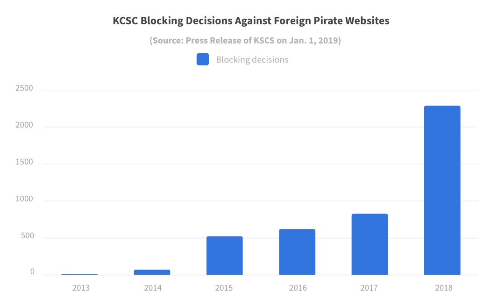

We have seen many attempts to censor the Internet under the pretext of copyright protection. Notorious attempts are SOPA and PIPA of 2012, which triggered the largest online protest in history and was eventually withdrawn, and ACTA, a plurilateral trade deal killed by the European Parliament in 2012. Now, Korean government tries to enact a much stronger internet censoring rule. If it passes the legislative body, a copyright protection agency may cut off access to websites that the agency views as copyright infringing. The concerns over mass surveillance and privacy vulnerabilities by the proposed rule are widespread amid the government's new drive to block "https" traffic by SNI eavesdropping (See, press release of Korea Communication Commission on February 12, 2019 and press release of MCST on May 2, 2018, both in Korean).
According to the proposed bill, the Minister of Culture, Sports and Tourism (MCST) may order internet
connection service providers, or ISPs, to block users' access to foreign websites that allow
unauthorised sharing of copyrighted materials (proposed Article 133bis (1)(iii)). Also, Korea Copyright
Protection Agency (KCoPA), a governmental body, may recommend ISPs to take the blocking measure (proposed
Article 133ter (1)(iv)). The bill, having passed the relevant committee in December 2017, is waiting for
approval of the Legislation and Judiciary Committee, the final hurdle before the plenary session. For
timeline of the bill, see here.
The censoring proposal is a move to strengthen the Korean three-strikes-out rule and implement the
"website shutting down" obligation under the US-Korea FTA. Governmental measures to block, without
any prior judicial scrutiny, access to foreign websites that host illegal information is not new. For
several years from 1990s, the communication authorities have blocked and filtered contents deemed illegal
and violating social norms, including those violating others' copyright. But the proposed bill is new
in that the copyright protection agency holds a power to block website access.
The bill is more harmful than SOPA and PIPA that provoked an Internet blackout in January 2012 because the
blocking can be implemented by an administrative decision without prior judicial review. Besides, the
blocking is handled by a copyright protection agency whose mandate itself is biased in favor of interests of
copyright industries rather than a balance striking between protection and dissemination of copyrighted
works. Therefore, the proposed bill is very likely to violate the right to access, a citizen's
fundamental right in digital environment, institutionalize internet censorship, and bring about a conflict
with human rights such as freedom of expression and right to science and culture.
The proposed blocking measure is not limited to websites that are hosting illegal "copies" of
copyrighted materials. It also covers any information that can infringe any right protected under the
Copyright Act, which may include hyperlink and search result. It further includes computer programs or
information that may help circumvention of technological protection measures (TPMs).
The U.N. special rapporteur in the field of cultural rights confirmed that website blocking measures to
combat piracy "could result in restrictions that are not compatible with the right to freedom of
expression and the right to science and culture." (A/HRC/28/57, para 51)
Copyright holders, especially web-based cartoon creators vehemently support the bill. They are backed by
copyright bureaus such as MCST and KCoPA who want to strengthen their own authorities. Webcomic writers have
suffered from pirate sites such as "Bam Tokki". Due to this suffering, they were captured by the
myth that the bill would effectively address piracy problems by quickly blocking pirate sites, more
specifically by shortening the time in making an administrative decision for blocking from two months to two
weeks.
But the rhetoric of "two months v. two weeks" is misleading. Under the current blocking rules
and procedures, the communication authorities may make a decision in two weeks. In reality, the Korea
Communication Standard Commission built up a task force to combat piracy and proclaimed that its examination
on blocking would complete in four days.
What the bill makes matters worse is skyrocketing of websites blocked by KCSC for the purpose of
copyright protection. The bill provoked competition between administrative bodies in holding the blocking
power. As shown in the chart below, after the bill passed the relevant standing committee of the National
Assembly in December 2017 and the webcomic writers have crusaded to make the bill enacted, KCSC’s blocking
decisions have tripled in 2018 (from 777 in 2017 to 2,338 in 2018). Further, KCSC tries to simplify the
reporting and examination procedures for blocking decisions, implying a weakened procedural fairness.

The copyright protection agency, i.e., KCoPA, is not a proper body to hold a power of website blocking as designed by the bill.
Are you against this idea? Send message to members of Legislation & Judiciary committee.
| No. | Role | Name | Party | Blog | Youtube |
|---|
This website is sponsored by the Commons Foundation, Jinbonet, and Opennet.